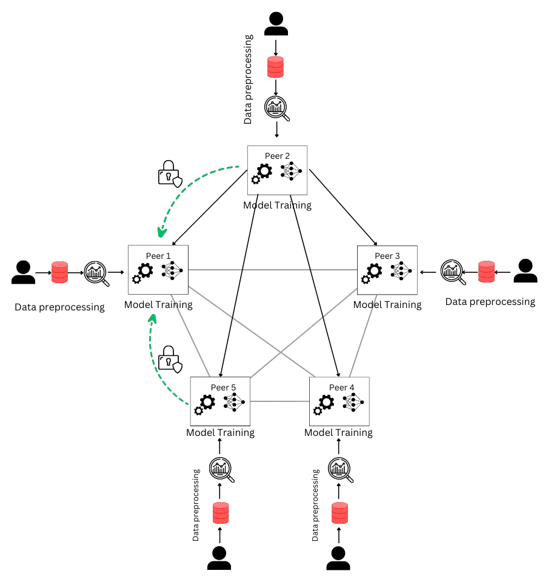

Floppy
Federated Learning on a Peer to Peer System

Developed Floppy, an innovative algorithm that decentralizes AI training across multiple devices, leveraging asynchronous Federated Learning and Secure Multi-Party Computation (SMPC) to preserve data privacy.
Protecting Data in Distributed Deep Neural Networks
Ensured data privacy in a distributed setting, addressing the risks of privacy violations when sensitive information enters Deep Neural Networks.
Novel Approach - Floppy
Implemented an asynchronous Federated Learning model with SMPC, ensuring privacy during collaborative training without the need for data aggregation at a central point.
Resilient and Efficient
Floppy's asynchronous nature makes it resilient against slower nodes, ensuring a smooth training process while preserving data privacy.
Real-World Evaluation
Evaluated Floppy using iid and non-iid image datasets, demonstrating its effectiveness in maintaining data privacy while performing computer vision tasks.